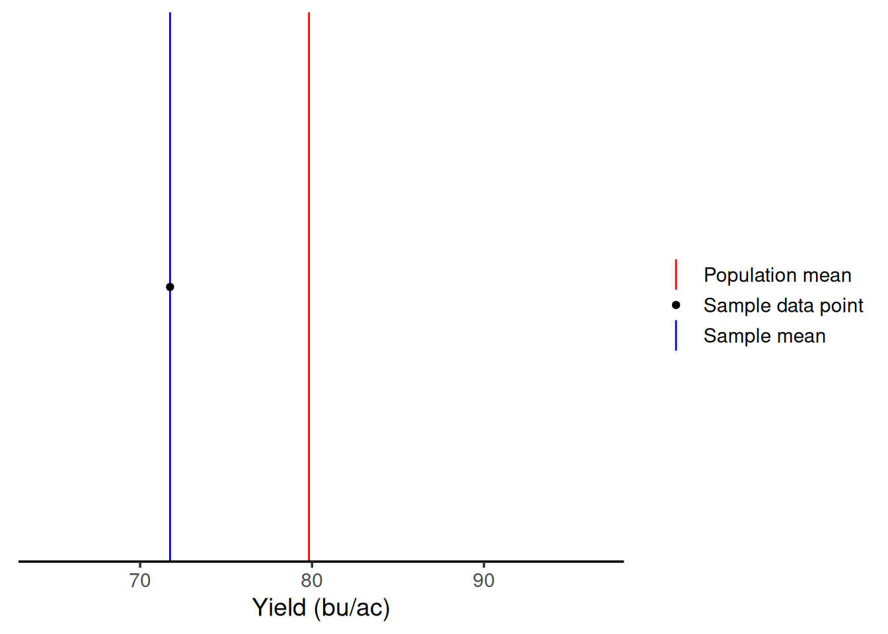
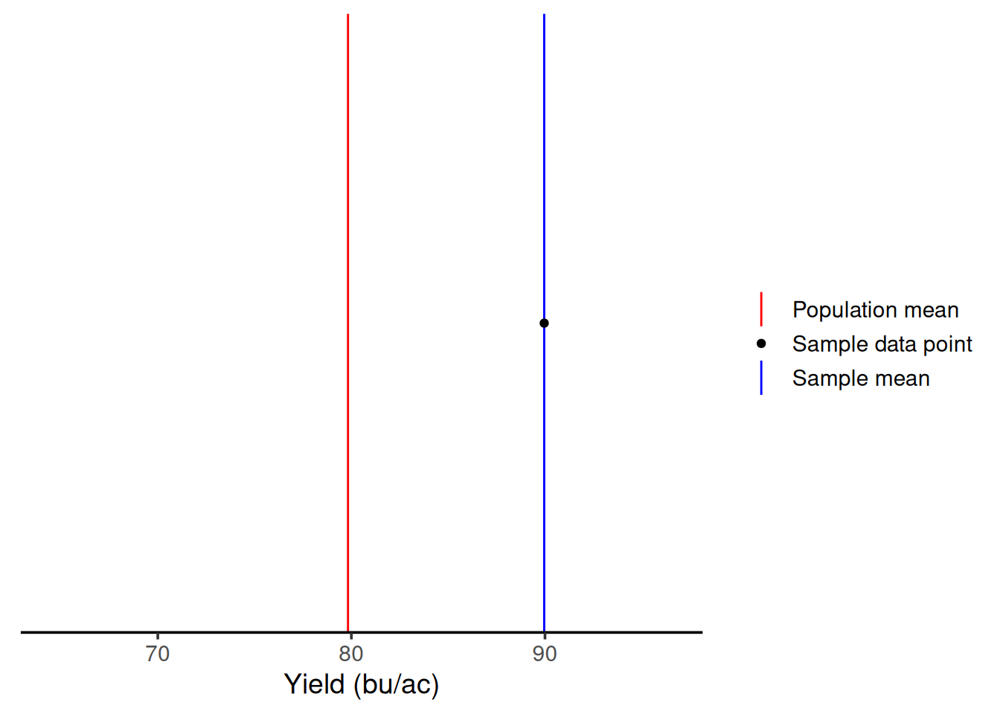
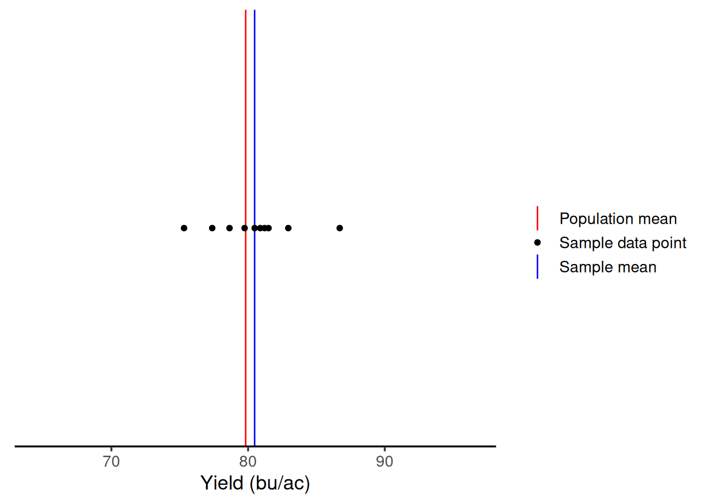
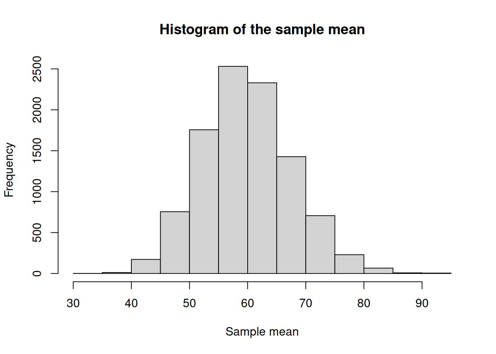
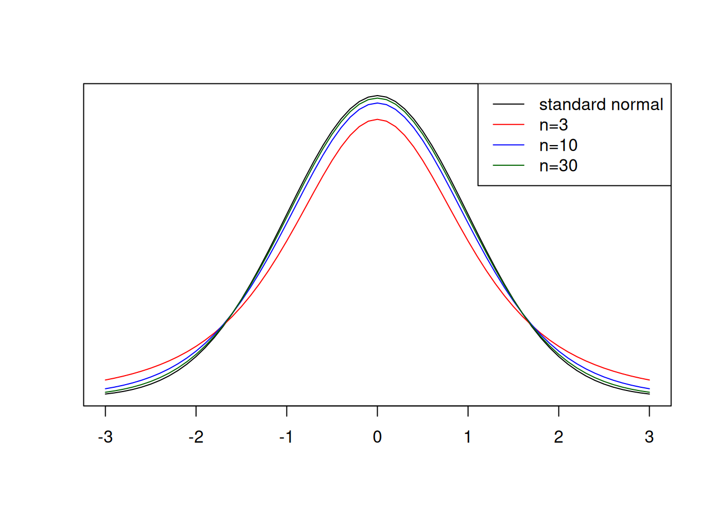

Sampling Distributions: Linking Samples to Populations
In the last two modules, we focused on populations and on how to summarize them when we are able to measure every individual. In that context, quantities like the mean and the standard deviation describe the entire population, because they are calculated using all available observations.
In agricultural science this is almost never possible, because the volume of fieldwork required to measure every single individual would simply be prohibitive to the work. If you have done field work before, can you imagine having to measure every single plant within an experimental unit? Instead, we rely on samples, right? This means that we collect from a subset of individuals and use those to learn about the population as a whole.
When we work with samples, instead of the whole population, we no longer can quantify the population mean (\(\mu\)) and standard deviation (\(\sigma\)) with certainty. Instead, we need to estimate these parameters from the information we retrieved from the samples. Now, this raises a couple questions, right? For example:
- Was the sample representative of the population?
- If we took a different random sample, would we get similar estimates?
- And how far might a sample mean be from the true population mean?
- Should we have taken more samples perhaps?
In other words, statistics computed from samples involve increased uncertainty. We rarely have complete confidence that a single sample mean perfectly represents the population mean.
This is where sampling distributions come in. Through replicated samples and examining how their means vary, we can describe the distribution of sample means around the population mean. This idea sits at the core of statistical inference: we use variability among samples to quantify how accurate our estimates are and how much uncertainty we should expect when making statements about a population.
Case study before we look at theory
There’s quite a bit of statistical theory that informs how we can use the sampled data to make statements about the population. However, I think a motivating example before we introduce that theory can be beneficial here.
Let’s take a look at the same soybean yield data that we looked at before. Just to remind you, take a look at the yield map:
Let’s pretend that you did not have this yield map and you wanted to sample this field to tell your boss (or your neighbor) what the average yield in this field was.
One sample
Let’s say that you were short on resources and could only sample this field once. How variable could your sample mean be?
To establish an easy way to compare the next steps, let’s draw a red line representing the population mean (\(\mu\)). Then, we can represent the sample mean (\(\bar{x}\)) in blue, and the sampled points as black dots.

By chance, with one sample, we would end up with a sample average of 71.74 bu/ac. But, this is one time, right? Let’s say I had gone to that field in a different day and had sampled a different location. As we can see from the graph below, with one sample, I could have gotten an average of 89.95 bu/ac. This illustrates that when we have low sample sizes, there’s a lot of variability in our measurements. This means you’re getting two very different answers simply by because of the location within the field that you sampled.

Ten samples
Ok, so let’s say you got some more resources to increase your sample size. Let’s see what happens with ten samples.
We can see that with 10 samples, we were able to get closer to the true mean on this iteration. Even though we had samples above and below \(\mu\), on average, we are close.

If we had sampled ten times in other parts of the field, the result would be the graph below. We are still close to \(\mu\) again. This shows that greater sample sizes will decrease the variability in the sample mean.

Visualizing the relationship between sample size and variability
So we can see how much the sample size can influence the variability of our sample mean, let’s do an exercise together. I will repeat the same procedure as before 10 times (10 iterations) and plot all of them in the same graph. The number on each panel represents the sample size.
In the graph below, you can see on the y-axis the iteration number and on the x-axis the yield value in bu/ac. Just like before, the red line still represents the population mean. The multiple blue lines now represent the sample mean for each iteration. As you can see, as the sample size increases, the sample mean lines cluster around the population mean. This shows this decrease in variability of the sample mean as a function of the increase in sample size.

Theory
Standard error of the mean
This decrease in variability as a function of an increase in sample size is well represented by a statistic called the standard error of the mean, which can be calculated as follows:
\[\sigma_{\bar{x}} = \frac{\sigma}{\sqrt{n}}\]
Central Limit Theorem
One of the most important theorems in statistics is the Central Limit Theorem (CLT), which states the following:
The distribution of the sample mean can be approximated as normal with mean \(=\mu\) and variance \(=\frac{\sigma^2}{n}\) when \(n\) is large
In practice, this approximation is used when \(n \geq 30\) regardless of the distribution of the population sampled. For smaller \(n\) this approximation can be questionable.
You may recognize that the variance of the sampling distribution is the square of the standard error of the mean.
Illustrating this principle
I thought you might appreciate seeing the Central Limit Theorem in action. In the yield monitor data example, the yield data was approximately normally distributed already, so it made sense that the sampling means distribution would also be approximately normal.
We can take a look at the CLT in action in a case in which the population distribution is not approximately normal. I will not go much in detail about the distribution itself, as it serves only to demonstrate the CLT.
We can see that the data below does not resemble a symmetrical bell-shaped population. It’s heavily skewed towards lower values. In this illustrative case, the population mean is 60.

Below, is some code that will take 30 samples (\(n=30\)) from this population 10,000 times so that we can create a distribution. I am including it as an example but please do not focus on it too much. The important thing is that it represents us sampling from this clearly not normally distributed population many times.Then, the code plots a histogram of the mean. Can you see how, even though the population mean is not, the sampling mean is approximately normal?
res <- c()
for (i in 1:1e4){
sample <- rgamma(30, shape = 2, scale = 30)
xbar <- mean(sample)
res <- c(res, xbar)
}
hist(res,
main = 'Histogram of the sample mean',
xlab = 'Sample mean')
The \(t\) Distribution
When talking about the CLT, we said that the sample mean distribution approximates to a normal distribution with variance \(\frac{\sigma^2}{n}\). While this is true, it makes this concept hard to apply in practice, as for most applications the population standard deviation (\(\sigma\)) is unknown. Therefore, we need to replace it for an estimate, which is usually the sample standard deviation (\(S\)). Thus, the theory leads to another distribution, called the \(t\) distribution.
Do you remember in the previous module that I talked about the standard normal distribution (\(Z\))? The \(t\) distribution will have a similar shape, but it also accounts for the fact that we are adding uncertainty because we do not know the **population* standard deviation (\(\sigma\)), and we are estimating it with the sample standard error (\(S\)). Therefore, the \(T\) statistic can be calculated as follows:
\[T = \frac{\bar{X} - \mu}{\frac{S}{\sqrt{n}}}\]
Particularities of the \(t\) distribution
In practice, this estimation of the population standard deviation by the sample standard error has an important implication for the \(t\) distribution. The distribution changes shape according to the number of samples you have collected. This is where we introduce the concept of degrees of freedom, which can is calculated as \(n-1\).
Quick look into degrees of freedom
There’s a more formal definition of degrees of freedom that involves linear algebra but, for this class, we can think of degrees of freedom as how much independent information we actually have left once we estimate something from the data.
When we collect a sample and calculate a sample mean, that mean is fixed. Once the mean is fixed, not all observations are free to vary independently anymore. The last observation is constrained by the ones that came before it.
Relationship between sample size and the \(t\) distribution
Let’s take a look at the \(t\) distribution in comparison to the standard normal distribution for different sample sizes, and then we can think about the effect of sample size.

An important characteristic of the \(t\) distribution is that, as the sample size increases, the more it approximates to the normal distribution. However, as we can see in the red line above, when sample sizes are low, more extreme values, for example \(|T| \geq 2\) are more common. This means that, when using the \(t\) distribution to find differences among treatments, for example, if the sample size is low, you might fail to detect those differences simply because more extreme values are common.
Curious fact
You might be familiar with the \(t\) distribution’s story. It was developed by W. S. Gosset, while working at Guiness, which did not allow employees to publish their work. The work was then published under the name of student, and the distribution is sometimes also called Student t distribution.
The \(t\) distribution in practice
Okay, by this point you might be wondering exactly how we will use this concept in practice. I wanted to give you an example to help you visualize how this can be useful.
Case study
Let’s say you went to a corn field and collected yield samples randomly at 16 locations. The yield averaged 13.8 t/ha with a standard deviation of 2.1 t/ha. Your boss had told you that if you could find statistical evidence that the yield was above 12 t/ha, you would get a bonus for being such a good agronomist.
Let’s put the \(t\) distribution in practice and get that bonus!
\[T = \frac{\bar{X} - \mu}{\frac{S}{\sqrt{n}}} = \frac{13.8 - 12.0}{\frac{2.1}{\sqrt{16}}} = 3.42\]
Great! We got a t-value that we can use to compare to the probability. Let’s use the fastGraph library again and check what is the probability that we get a value t-value outside of 3.42.
We can see below that the probability is pretty negligible. Can you even see the red shaded area? Therefore, you could tell your boss to write you a big check!
library(fastGraph)
shadeDist(xshade = c(-3.42, 3.42),
ddist = 'dt',
parm1 = 15) ## degrees of freedom: n - 1
Confidence intervals
We can flip the relationships between \(t\) and probability to talk about confidence intervals. Let’s say that instead of testing whether a t-value provides evidence that your mean is different from a given value, you want to state an interval for which the population mean is likely to fall within.
Doing some math, we can say that the confidence interval (CI) can be calculated using the formula below, in which the \(t\) value corresponds to the significance level.
\[CI = \bar{x} \pm t \times \frac{S}{\sqrt{n}}\]
Let’s compute the CI for the previous example and let’s use n = 16.
In the past, we used t-value tables to guide us in these tests. Have any of you ever seen these? I used them in undergrad.

Luckily, in R, we can retrieve the same information using the qt() function, which stands for quantiles.
Since we are interested in quantifying the 95% CI, we will use the values 0.025 and 0.975, which leaves 5% of the probability in the outer tails.
tvalues <- qt(c(0.025, 0.975), 15) ## 15 degrees of freedom (n - 1)
tvalues[1] -2.13145 2.13145Using the t-values either from the table or from the qt() function, we can compute the confidence intervals.
upper.boundary <- 13.8 + 2.13 * (2.1/sqrt(16))
lower.boundary <- 13.8 - 2.13 * (2.1/sqrt(16))
upper.boundary[1] 14.91825lower.boundary[1] 12.68175Looking ahead
This unit provided in-depth theory of sample statistics and we did a lot of the heavy lifting computations by hand. As I have been showing you, R has functions that can compute these quantities of interest very quickly. However, understanding where those computation come from, the assumptions made when running these computations, and how they can fail is just as important as learning how to use them.
In the next unit, we will use these concepts to analyze experimental data in a side-by-side trial. The concepts of the \(t\) distribution and confidence intervals are going to help us look for difference among treatments.